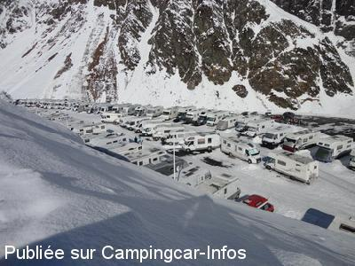

ASN = Aire de services avec stationnement nuit possible de :
ARAGNOUET Piau Engaly
(N° 192)
Accès/adresse :
D118
Station de ski de Piau Engaly
65170 ARAGNOUET
Station de ski de Piau Engaly
65170 ARAGNOUET
Latitude : (Nord) 42.78645° Décimaux ou 42° 47′ 11′′
Longitude : (Est) 0.15689° Décimaux ou 0° 9′ 24′′
Tarif : 2015
Stationnement, services, électricité, wifi, hiver : 15 €
Gratuit le reste de l'année, sans services.
Paiement par carte bancaire
Type de borne : Autre
Services :


Commerces
Gaz sur place
Autres informations :
Ouvert en période de ski et 2 mois d'été
120 emplacements, éclairés
Stationnement limité 3 jours
100 prises électriques
Accès avec barrière automatique
Accès: D118
Station de ski de Piau Engaly
Ne pas prendre la première entrée du P1,
Prendre la direction du P5 et 50 mètres avant d'arriver sur le parking P5 vous trouverez le passage qui vous mènera sur le parking camping-car.
Permanence accueil :
- Matin 11h-12h
- Après midi 16h-17h
Tel : +33(0)562 396 169
http://www.piau-engaly.com
Le 24/12/2012 par coco et nath
Le 21/04/2012 par joel 16

Le 27/02/2012 par coco et nath
Le 31/07/2006 par jean_paul.bedouet
Le 31/07/2006 par jean_paul.bedouet
de
Jacques64
le 06/05/2016 :
En effet, l'aire s'est nettement dégradée par manque d'entretien, les bornes électriques détériorées, de toutes façons il n'y a pas d'électricité en dehors de la période hivernale, lorsque le parking est payant.
En effet, l'aire s'est nettement dégradée par manque d'entretien, les bornes électriques détériorées, de toutes façons il n'y a pas d'électricité en dehors de la période hivernale, lorsque le parking est payant.
de
ferrand
le 06/07/2015 :
De passage fin juin 2015
Tres grand parking pour caravaneige.
Personne sur cette aire à notre passage.
Services dans un état déplorable.
Cadre magnifique
De passage fin juin 2015
Tres grand parking pour caravaneige.
Personne sur cette aire à notre passage.
Services dans un état déplorable.
Cadre magnifique
de
Jacques Cousin
le 30/03/2014 :
§ Aire toujours bien entretenue, les WC sont chauffés et nettoyés régulièrement. Nombreuses bornes électriques, inclus dans le tarif de 15 €/jour et wi-fi. Une navette gratuite vous amène aux pistes.
§ Aire toujours bien entretenue, les WC sont chauffés et nettoyés régulièrement. Nombreuses bornes électriques, inclus dans le tarif de 15 €/jour et wi-fi. Une navette gratuite vous amène aux pistes.
de
rayman
le 30/12/2013 :
Hemos estado tres días en este área del 26 al 29 de diciembre 2013. El precio de este área es lo que llaman forfait, y es de 15€ te conectes a la luz o no lo hagas.
Cuando he ido a pagar hoy (que se puede hacer en un monolito con tarjeta), iba a pagar por la estancia y servicios de vaciado y llenado, pues el wifi no pude conectarme y la luz tampoco, pues todas las tomas estaban ocupadas. Al ir a pagar los supuestos 22,50€ por estos servicios, me han indicado que el precio era de 15 por día y como excepción, me han cobrado dos días. 6,50€ de más de lo que esperaba, según esta página.
Por cierto, al ser en estación de nevadas, no se puede vaciar las aguas grises en el lugar correspondiente. Hay que hacerlo en la pileta de las aguas negras, con cubos o cualquier otro tipo de depósito que se tenga. De otra manera es imposible, tengas las aguas grises calefactadas o no.
Hemos estado tres días en este área del 26 al 29 de diciembre 2013. El precio de este área es lo que llaman forfait, y es de 15€ te conectes a la luz o no lo hagas.
Cuando he ido a pagar hoy (que se puede hacer en un monolito con tarjeta), iba a pagar por la estancia y servicios de vaciado y llenado, pues el wifi no pude conectarme y la luz tampoco, pues todas las tomas estaban ocupadas. Al ir a pagar los supuestos 22,50€ por estos servicios, me han indicado que el precio era de 15 por día y como excepción, me han cobrado dos días. 6,50€ de más de lo que esperaba, según esta página.
Por cierto, al ser en estación de nevadas, no se puede vaciar las aguas grises en el lugar correspondiente. Hay que hacerlo en la pileta de las aguas negras, con cubos o cualquier otro tipo de depósito que se tenga. De otra manera es imposible, tengas las aguas grises calefactadas o no.
de
bernard et annick
le 03/03/2013 :
§ bonjour nous sommes restes 3 jours sur l'aire beaucoup de neige pas de problème particulier.les tarifs sont tjrs identiques.super accueil tant à l'office de tourisme qu à la billeterie.beaucoup d'entraide entre ccaristes pour sortir des emplacements.
§ bonjour nous sommes restes 3 jours sur l'aire beaucoup de neige pas de problème particulier.les tarifs sont tjrs identiques.super accueil tant à l'office de tourisme qu à la billeterie.beaucoup d'entraide entre ccaristes pour sortir des emplacements.
de
joel 16
le 10/04/2012 :
WIFI: demander la procédure à suivre à l'office de tourisme (connexion avec indentifiant et mot de passe)
WIFI: demander la procédure à suivre à l'office de tourisme (connexion avec indentifiant et mot de passe)
de
coco et nath
le 25/02/2012 :
bonjour ... rectification sur le tarif de l aire de camping-car de piau engaly 7,50 euros pour le parking et 7,50 euros pour l electricité et oui 1 euro de plus que l année dernière !!! normal il y a la wifi en plus sur l aire mais il faut la chercher lol ... bonne route a vous tous :)
bonjour ... rectification sur le tarif de l aire de camping-car de piau engaly 7,50 euros pour le parking et 7,50 euros pour l electricité et oui 1 euro de plus que l année dernière !!! normal il y a la wifi en plus sur l aire mais il faut la chercher lol ... bonne route a vous tous :)
de
marypat
le 24/05/2011 :
En mai, bien sûr, c'est tristounet dans les nuages, mais qu'importe si elle ne fonctionne pas, elle est très bien située, on n'a aucun service mais on ne paie pas l'emplacement. L'hiver elle doit être très prisée.
En mai, bien sûr, c'est tristounet dans les nuages, mais qu'importe si elle ne fonctionne pas, elle est très bien située, on n'a aucun service mais on ne paie pas l'emplacement. L'hiver elle doit être très prisée.
de
cossat nicole
le 29/07/2010 :
En visite sur cette aire la semaine du 19 juillet, nous y allons depuis de nombreuses années. ATTENTION aire en travaux, chalet en travaux, donc pas d'eau, pas de possibilité de vider les cassettes, juste de vider les eaux sales. Sinon, aire très agréable, le site est magnifique. Beaucoup de places, de jolies promenades en montagne.
En visite sur cette aire la semaine du 19 juillet, nous y allons depuis de nombreuses années. ATTENTION aire en travaux, chalet en travaux, donc pas d'eau, pas de possibilité de vider les cassettes, juste de vider les eaux sales. Sinon, aire très agréable, le site est magnifique. Beaucoup de places, de jolies promenades en montagne.
de
didier
le 16/01/2010 :
Nouveaux tarifs 2009/2010 : stationnement 6€, électricité 6€. Nouveau cette année, une barrière automatique à l'entrée avec prise de ticket et paiement par CB sur borne automatique ou paiement comme précédemment aux agents de la station aux heures habituelles.
De plus, cette année, possibilité d'acheter sur l'aire bouteilles de gaz toutes marques aux heures de permanence des agents de la station.
Cordialement
Nouveaux tarifs 2009/2010 : stationnement 6€, électricité 6€. Nouveau cette année, une barrière automatique à l'entrée avec prise de ticket et paiement par CB sur borne automatique ou paiement comme précédemment aux agents de la station aux heures habituelles.
De plus, cette année, possibilité d'acheter sur l'aire bouteilles de gaz toutes marques aux heures de permanence des agents de la station.
Cordialement
de
Olley
le 03/07/2009 :
Stayed one night in Feb 08, excellent aire for skiers, 4amp electric, plus water, waste and toilets in cabin at the bottom. Some shops and restaurants, quiet at night.
Narrow winding approach road with several hairpin bends, suggest arriving morning and leaving afternoon, to avoid meeting tour coaches. Very little English spoken
Stayed one night in Feb 08, excellent aire for skiers, 4amp electric, plus water, waste and toilets in cabin at the bottom. Some shops and restaurants, quiet at night.
Narrow winding approach road with several hairpin bends, suggest arriving morning and leaving afternoon, to avoid meeting tour coaches. Very little English spoken
de
jl_22
le 15/01/2008 :
Notre premier séjour en camping-car à la montagne. Aire idéalement située au pied des pistes. Confort un peu spartiate surtout en période de grande affluence. Tarif correct. Personnel serviable.
Notre premier séjour en camping-car à la montagne. Aire idéalement située au pied des pistes. Confort un peu spartiate surtout en période de grande affluence. Tarif correct. Personnel serviable.